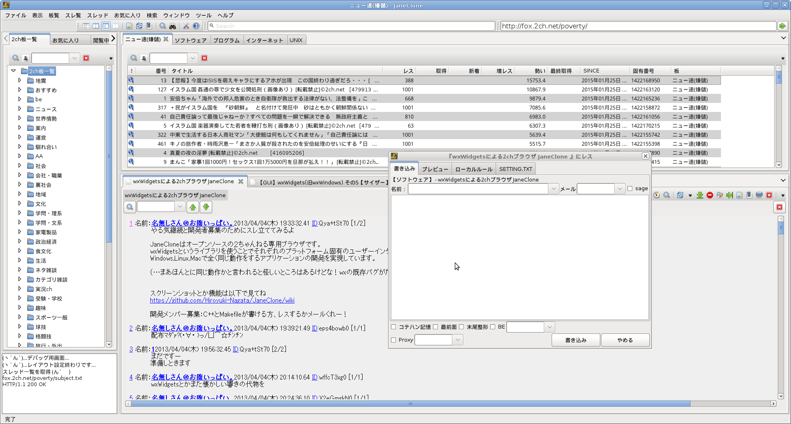

JaneClone
以下の環境で動作します
- Windows XP, Vista, 7
- Linux (GTK2 or 3)
- Mac OS X (Lion~)
- BSD (GTK2 or 3)

概要
クロスプラットフォーム２ちゃんねる専用ブラウザ
ダウンロード
Windows Linux Debian/Ubuntu コマンドラインから、以下を実行し /etc/apt/sources.list にレポジトリの場所を追加してください。# echo "deb http://dl.bintray.com/hiroyuki-nagata/deb /" | sudo tee -a /etc/apt/sources.list
# echo "deb-src http://dl.bintray.com/hiroyuki-nagata/deb /" | sudo tee -a /etc/apt/sources.list
# apt-get update
# apt-cache search janeclone
janeclone - Cross Platform 2ch browser
# apt-get install janeclone

スクリーンショット
Windows Linux  Mac OS X変更履歴
以下のリンクを参照 https://github.com/Hiroyuki-Nagata/JaneClone/releasesビルド
$ ./bootstrap
$ ./configure
$ make
詳細はINSTALLファイルを見てください。